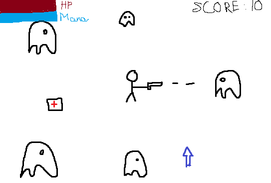

So this game is a survival game where the player has to survive as long as possible by killing monsters that chased after him. The player can shoot down the monster and they can drop little upgrade pieces for user to collect and upgrade their power
This is a game where shooting/action is its primary gameplay.
This is a desktop only game for now but if I have time I would try to have it playable on mobile or tablet
So the story of this game is about a mage fighting off all the monster in this haunted mansion. The game would give off some scary feeling but it wouldn't be as much as a horror game would be because it is still a shooting based game
This game will have a pixelated graphic with an 8-bit sound effect with it. It would have some sound effect like: shooting, shot connected, losing HP, collecting upgrade, background music (if possible)
Moving in this game will required WASD and left mouse click to aim and shoot. Special ability like a skill and a dash maybe implemented later if have time and those abilities will be bind with other keys like F or G

Character will have HP and mana bar at the top left of the screen and their score display at the top right of the screen. upgrades will fall where the monster is killed.
My name is Minh Duy Bui, I'm major in Game Design and Development. One of my skills are Game Design, Game Development, and Website Development and the platforms that I'm fluence in is Maya, Unity, Unreal Engine, Google Site, VS Code, Visual Code Studio using programming language like C#, HTML, CSS, and JavaScript.
So I want to have a set up somewhat similar to the Circle Blast and want to be responsive as well. The first thing I do is to load and make sure that the sprite sheet for my character works, I load the sprite sheet then mess with the number to figure out the frame width and height and what are the off-set to have the smoothest animation possible. I then start creating a class for my main character where I store the position of the player and its animation, I also have a method in there to switch between animation. I then create some movement for my character using WASD and switch between animation appropriately.
The next thing I implement is the attack for my character. It's pretty much the same method I use for my player which I load the sprite to make sure it works smoothly first then I implement the necessary class and method in later. The method store some needed x and y, vx and vy to calculate the angle and destination of the attack.
The Ghost is also the same thing. But it has its own update function where the ghost will chase after the player. They also have a small method to set their target on the player. Along side of the ghost I implemented little heart that the ghost will have 10% to drop if they got killed
All of the hearts, ghosts, and attacks got stored in an array so that it will be easy to clean up if needed to.